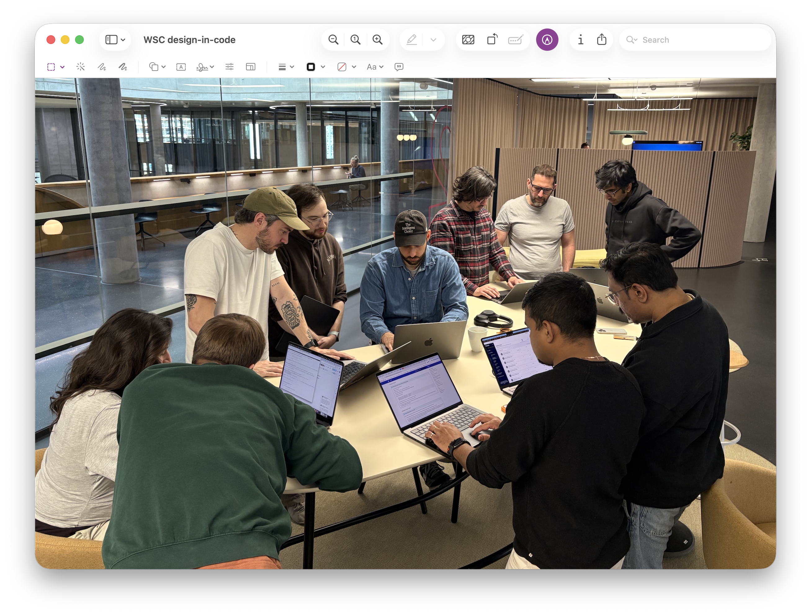
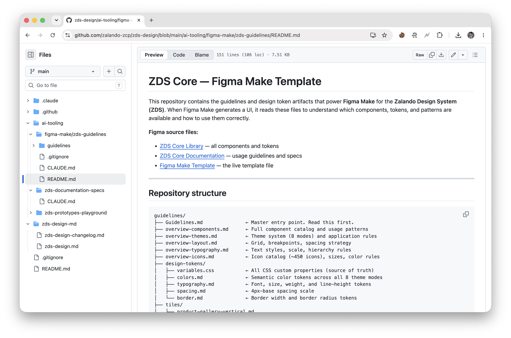
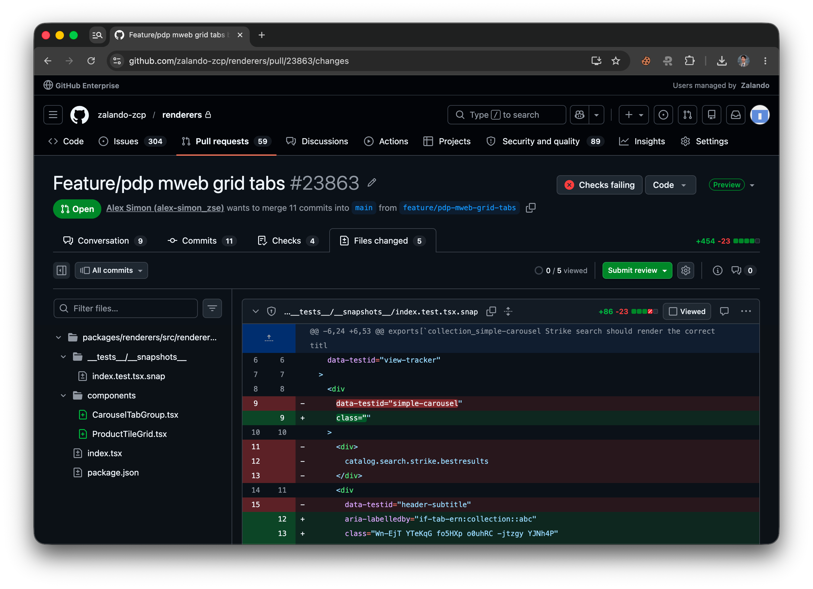

Zalando · 2025–2026
150+ designers using unauthorised tools, real GDPR exposure, no shared standards. The mandate came from the work itself; see Occam. I designed the strategy and infrastructure to fix it, then validated the model by shipping a production feature myself: design to live in half a day.

81% of Zalando's designers were using AI tools on personal accounts, without org approval, pasting company data in without oversight. The real risk wasn't the tools. It was siloed knowledge, GDPR exposure, and an org building bad habits at scale.
The tools also failed on anything that mattered. Zalando had a proprietary design system, a React codebase, GDPR constraints, SSR requirements. A previous pilot tool withdrew from the integration entirely: "too advanced for their v1." A 90-person survey confirmed what the interviews showed: designers used AI to move faster, but without Zalando-specific standards, those shortcuts created rework.
The response was Safe Harbor: approved tools, a shared environment, a deliberate push toward collective practice rather than enforced compliance. CPO-level backing from Timm Kekeritz, Gerrit Kaiser, and Marcia Arff, secured through early results. Engineering leadership flagged the pilot tool as unapproved the week before launch. Proposed a one-day time-boxed pilot instead of permanent approval. Proceeded.
Infrastructure first, then practice. Each track addressed a different layer of the capability gap, from the design system itself to how designers and engineers work together in the codebase.
Track 0
ZDS connected via MCP. Any AI tool now generates components using Zalando tokens, brand rules, and accessibility standards. The foundation every other track depends on.
Track 1
Monthly AI Jams with live briefs and real product constraints, not sandbox exercises. First session: 15 participants, 4 facilitators. Format designed so learning happens in the open, not in silos.
Track 2
Figma files readable by humans, engineers, and AI. zSpecs plugin: 168K issues detected, 4,836 fixed, 23 active users.
Track 3
Designers working directly in the production codebase. No handoffs, no tickets, no translation step. The feedback cycle went from days to minutes.
The model needed a proof of concept, not a deck. Five teams worked simultaneously: designer brings the intent, engineer brings the codebase, AI assists. I ran one pilot myself: a new PDP feature from design to code to live in half a day. I needed to know exactly what I was asking teams to do.
A designer with no coding background pushed a real PR. Another team built a new PDP-to-Zalando-Assistant feature entirely in code.
Isolated experimentation became a shared discipline. An active working group now discusses approaches, shares setups, and builds on each other's work: dic-hub GitHub repo, bi-weekly cadence, pilot templates that any team can pick up. 8+ teams are running their own pilots. One team that adopted the model cut their delivery sprint from 4 weeks to 1 week.
Designed the strategy, secured the stakeholders, built the four tracks, ran the pairing day, established the community infrastructure.

